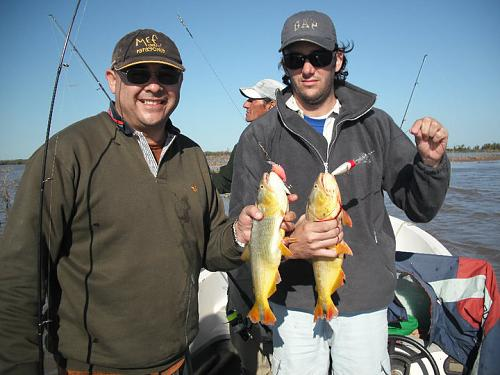

Site de Pesca

Pro Anglers
Pro Anglers
Cansada de tantos pejes y de pescar siempre lo mismo, Belen, mi bruja, venia pidiendo cambio de destino. Ella quería pescar algo que tirara más que una flecha de plata. Se acercaban las vacaciones y enterado que el pique en Sauce Viejo venia bárbaro, no dude en llamarlo a Dario de Paraje Costero para preguntarle si tenía lugar en sus cabañas. Dale Fer, vénganse, tengo lugar me contesto. Arreglo unas cosas y te aviso le respondí. Por cuestiones de enfermedad no pudimos salir para Sauce y Belen ya se ponía insoportable. Un dia en casa, ella revisaba unas fotos y descubre las de Santa Elena, las vio, le gusto el lugar y preguntó si era muy lejos. A lo cual le respondí que no, que estábamos a tan solo 540 km de Córdoba y que era una muy buena opción ir para el Paraná ya que ella quería Dorados y algún Surubí.
En la salida a Sauce, José “Sapo” Luna, había quedado encantado con la pesca y la quería llevar a la mujer, por lo cual me pidió que si después, cerca de las vacaciones o en un feriado largo podíamos organizar algo con las mujeres, le avisara. Sumado a la insistencia de mi Cacavacha, es que decidí llamar a 2 lugares distintos que conocía en Santa Elena – Entre Ríos, a Cabañas “Las Piedras” del amigo Gabriel y a SerraSalmus Lodge de German Boffi. En cada lugar tenían una sola disponibilidad. Yo preguntaba por una segunda cabaña, porque sabía que de la partida seriamos más que 2 parejas. Le comento la salida a Raúl Sagristani y me dijo que le encantaría ir con su novia Andrea, sipodíamos buscar una cuarta pareja, de ahí a llamarlo a Martín Arguello y Nancy, su señora, a loque ni me dejó que le pregunte si quería ser participe de la salida que ya lo tenia en casa contodo cargado en el auto.
Así que reservé una cabaña en Las Piedras y la otra en Serra Salmus.
Lo complicado de la organización, fue que en el auto de José, iba Raúl y entre ellos decidieron no pescar el primer día, porque no sabían si a las mujeres le iba a gustar la pesca y si se iban a bancar 2 días arriba del trucker (esperen y lean un poco mas la historia). En el caso de Martín y en el mío, nosotros íbamos a pescar 2 días, sea como sea, con brujas o sin ellas. Si vas al Paraná, tenes que pescar 2 días como mínimo (para justificar el viaje y la plata). A la bruja le había dicho, que podía arrepentirse antes de subir al bote, una vez arriba no había Lola.
.jpg)
Llegamos a la madrugada a Santa Elena, German muy atentamente nos estaba esperando con un rico desayuno, que constaba de Pan Casero, con manteca y dulce y Café con Leche. Desayunamos y nos acostamos a dormir un ratito a esperar que sea la hora de salir a pescar. Eran alrededor de las 6:30 de la mañana, cuando suena el despertador, Belen, se asoma por la ventana de la pieza, no lo podía creer. Le hubieran visto la cara de juguete que tenia. Las cabañas están sobre unas barrancas y tienen una vista Bellísima del Paraná. Impagable, era una postal la vista que teníamos desde la pieza. En un santiamén se puso todo el abrigo y salio afuera, a contemplar el hermoso Río Paraná. No había nada que pudiera borrarle esa cara, esa sensación, la misma que nos transforma a nosotros, los hombres, cada vez que tenemos la suerte de pescar en el.
Ni le importo el frío, en 2 segundos, junto a Nancy cargaron las cañas en el auto (nunca las vi laburar tanto como ese día). Fuimos en busca del guía conocido como “Lechu”. Una gran persona y un excelente guía. Siempre dispuesto y atento a las necesidades nuestras. En realidad, mas que nuestras, de las chicas. Pobrecito Lechu, lo tuvieron de acá para allá con el encarne y desencarne, jajajaj. Nos llevo a Piedra Mora y nos prometió que haríamos una excelente pesca, muchos Dorados y grandes. Bárbaro, le contestamos con Martín. EL frío que hacia en ese trayecto, no se pueden imaginar. Ya la cara de las mujeres empezó a cambiar, no se imaginaban que arriba del trucker a esa velocidad, el frío se triplicaba.
.jpg)
Con Martín decidimos darle cañas duras a las chicas cosa que al ser novatas no las quiebren y frontales para que pudieran tirar solas y evitar las galletas. Nosotros usamos rotativos, el caballito de batalla de Abu. Anzuelos del 8 con leader de 45cm aproximadamente, plomitos pasante de 10 gramos y líneas al agua. A las chicas las mandamos el fondo del trucker, para que tiren y dejen la línea allá al fondo, así evitábamos que tuvieran que tirar y recoger y nos engancharan a nosotros. Al cabo de unos minutos, Belen ya tenía su primer pique y por suerte había aprendido bien las lecciones. Cañazo certero y al cabo de unos segundos, tenía arriba su primer manduvé. Bueno, era el turno nuestro, de los hombres, porque para esa altura las mujeres ya estaban insoportable que habían sacado el primer pescado. Tuve la suerte de tirar, dejar derivar la línea y sentir una linda llevada, que luego de unos minutos de una muy linda pelea se transformo en un hermoso Dorado de arriba de 4.5kg.
La pesca estaba muy fácil, era tirar, dejar derivar un poco y tenias un pique de un Dorado después de un rato, con mas de una decena de muy lindos dorados, de 3.5kg hasta 5.5 kg, la cara de las mujeres eran impagables. Hasta en ese momento si le cambiabas una salida a comprar botas o carteras y estar pescando esos hermosos Salminus, no lo dudaban ni un segundo, seguían en el Paraná.
El sol empezó a castigar, así que de a poco, como cebollas nos fuimos sacando capas y capas de abrigo. No termine de sacarme las cosas, que la caña de Belen tuvo una terrible sacudida. Cañaa!!! le gritaba desde la otra punta del trucker, cañaaa de nuevo!!! No se imaginan como se doblo esa caña dura, como sacaba nylon y sonaba ese reel.
.jpg)
Así que me fui para el fondo del trucker para intentar aconsejarla de cómo pelearlo y disfrutar de semejante bestia que seguramente era. Tapé me decía el guía, Surubí le contestaba yo. Como veía que esto iba a venir para rato, puse el cronometro. Al cabo de unos minutos, ya lo trabajaba muy bien, la cara de felicidad y de éxtasis por semejante pez se dibujaban en su rostro. Lograba acercarlo al bote y de nuevo otra corrida de por lo menos 30 metros. Eso es surubí decía yo. Al pasar los 10 primeros minutos, la cara de felicidad se empezó a transformar en cansancio, ya no daba mas, gritaba que se la habían cansado los brazos. Bueno le respondí, si estas cansada, tenes 2 opciones o cortas la línea o me la das a mí y saco yo el surubí. Ni en pedo me retrucaba, cobraba energías y seguía peleándolo. No me dan mas los brazos maldecía al rato. Bueno, te repito, si estas cansada lo peleo yo. Jaja. Esa era la forma de incentivarla, sacaba bronca de adentro y volvía a la carga de ese Surubí o Paté. Así estuvimos al largo de muchísimos minutos mas, que la verdad que se extendieron por la gran pelea del pez y la todavía poca cancha y fuerza de Belen de pelearlos, ya que tenia que agarrar la caña con las 2 manos para levantarla y al bajarla para recoger le costaba. Así seguimos varios minutos mas, mientras la bruja casi lloraba del dolor de brazos. El Lechu a esa altura no podía creer que eso fuera un pescado y no un pez palo o una gran bolsa. Le pide la caña a Belen, mientras yo le decía que era un pez, que lo había visto cabecear varias veces aparte que cuando lo acercaba al bote, salía disparado robando tanza en 5 o 6 oportunidades. Agarra la caña el Lechu y empieza a laburarla, si es Pescado me dice. Obvio Lechu le retruque. Ni bien logra acercarlo, de nuevo roba línea, lo cual el guía traba un poco el carretel del reel con la mano, evitando que el pez robe línea y tannnn!!!! Rompió línea. Noooooooooo!!!!!!! La cara de la bruja, que no pudo ver ni el lomo ni el tamaño de lo que había estado peleando arriba de 30 minutos. Después cuando recogimos vimos que de tanta pelea y por las piedras que hay en el fondo, la tanza se había ido mellando y no fue por impericia del guía, sino porque había rozado mucho contra ellas.
A esta altura, la bruja se tiro en el asiento extenuada de tanta lucha, no me dan mas los brazos decía, no los puedo mover. En ese momento Nancy mete un cañazo y vemos saltar a lo lejos un hermoso Dorado. Conociéndolas a las mujeres, le mojo la oreja y le digo, bueno, sino queres pescar mas, no lo hagas, seguimos sacando dorados nosotros los hombres y Nancy. Jajaja. Surtió efecto, ahí nomás volvió agarrar la caña y de nuevo al agua. La verdad que estábamos haciendo la pesca de nuestra vida, tirábamos y sacábamos, para colmo excelentes tamaños.
Otra vez sopa, Belen mete otro cañazo y este vez después de tanto sufrir, tanto putear y decir que le dolían los brazos logro meter arriba del bote al Dorado mas grande de la jornada, el que nos serviría para almorzar en la isla que es lo que tanto queríamos, un rico Dorado frito.
.jpg)
Para que les digo lo insoportable que se puso por haber sacado hasta el momento el dorado más grande, el que nos daría de comer en la isla. No la aguantaba mas, quería encarnar con ella, intentar pescar una ballena. Las chicas seguían pescando, nosotros con Martín a esa altura nos dedicamos a disfrutar de ese hermoso día de pleno invierno que seguro rondaba los 24 grados. Ya cerca de las 12 y con arriba de 40 dorados todos parejos, decidimos partir a la isla a comer “el bicho que saco Belen”. Llamada de mi viejo preguntándome como nos estaba yendo y por supuesto Quetejedi, atrás gritándome en el oído, decile que saqué el mas grande, decile que tiene mas de 5.5kg, decile, decile….Arghhhh, que ganas que tenia…… Paramos en la isla, y mientras el Lechu nos hacia uno de los Dorados fritos mas ricos que habíamos comido en nuestras salidas, nosotros intentábamos pescar alguna variada.
A todo esto, Martín intentaba comunicarse con los chicos que se encontraban en Santa Elena, disfrutando el día con respectivas mujeres y de paso mandarle una gastada por la pesca que se habían perdido. José le dice, no te creas que los envidiamos, nosotros estamos comiendo unas milanesas de surubí en las termas, viendo el Paraná, después nos haremos unos masajes. Jajajaj. Como nos quiso relajar el más sapo del Grupo. Al rato, la comida estaba servida. Que bueno que estaba esa fritanga por favor. Otra vez la cara de las chicas volvía a iluminarse, era el paraíso para ellas. Tantas veces nos habían escuchado a nosotros comentar estas locuras, nuestras salidas y demás, y ahora ellas, estar siendo parte de una salida tan impecable y soñada como era hasta ese momento. La verdad que a Martín y a mí, nos daba una cuota de inmensa alegría y tranquilidad el verlas tan contentas. Terminamos de comer alrededor de las 14hs y el guía nos pregunto si queríamos hacer una pasada máspor la zona e intentar pescar otro. No le dijimos, ya estaba recontra hecha la jornada, volvamospara las cabañas, así podemos llevar a las chicas a las Termas. Así dimos por finalizado ese tremendo día de pesca.
Para ir acortando la nota porque se esta haciendo extensa y no quiero cansarlos, intentara ir al grano lo mas posible y omitiré varios detalles. Fuimos a las Termas de La Paz (40 km) y nos encontramos con nuestros amigos. La verdad que meterse en las aguas termales y tener en el horizonte el Paraná y su atardecer fue impagable, más cuando se comparte esos momentos con amigos.
Un rato largo compartiendo las anécdotas de la pesca de ese día. Duchazo y partimos al centro de La Paz a cenar a un lugar medio Cate Cate. A esa altura las chicas no podían pedir mas, pesca excelente de dorados, Termas y salida a cenar. Que mas podían pedir? Los hombres pedimos surubí gratinados, a la crema, con algún otra salsa (buenísimos todos los platos) y las chicas pastas.
.jpg)
Teníamos que pasar por la Morenera La Rueda, que queda a la entrada de La Paz a recoger las morenas que había encargado para el día siguiente. Sobre la marcha, Raúl nos hace devolver 2 docenas porque teóricamente su novia, Andrea, le había dicho que no le preparara caña porque no iba a pescar. Bueno, devolvemos 2 docenas.
Para la segunda jornada de pesca, había llamado a Esteban Legler un excelente guía de Santa Elena y su ayudante Omar, otro excelente guía y amigo personal, con el cual ya compartí muchas salidas. A la mañana siguiente, claro, el grupo que no había pescado el día anterior estaba ansioso esperándonos en el muelle. Nosotros embarcamos en el bote con Omar y el otro grupo con Esteban. Esta vez yo quería que las chicas conocieran las islas del Paraná, sus riachos, camalotales y demás, ya que la pesca del día anterior era sobre la costa misma del Paraná. Así que enfilamos río arriba. Hicimos la típica parada con Omar y Esteban, plomito del 10, todo lo mismo que el día anterior. Contra esa piedra dijo Omar. Obvio que el primer tiro ya lo estaban haciendo las chicas y el primer dorado ya lo habían sacado ellas.
Fueron varios minutos de tirar, dejar derivar unos metros y cañar. Los tamaños eran menores que el día anterior, pero la diversión al por mayor. En esos minutos, obtuvimos no menos de 10 dorados cada uno. Mientras tanto, en el otro trucker, Raúl engancha un dorado y le da la caña a su novia “la que no quería pescar” para que viva esa sensación, la misma que nos agarra a cada uno de nosotros, cuando tenemos un cabezón en la otra punta de la línea. Andrea acepta la caña y luego de unos minutos de pelea, logra su primera foto con un Dorado. Claro, la felicidad que tenia esa mujer no fue fácil de hacerla que se volviera a sentar.Le pidió a su novio, que si enganchaba otro dorado la dejara traerlo de nuevo.
.jpg)
Ya mi cuota de dorados pescados con carnada por ese día estaba cubierta, quería probar unos señuelos muy baratos que me había dado Miguel del Bigua para que probara que tal nadaban y pescaban, para que los rayara. Así que puse uno parecido a un mini globe de media agua, cardenal y lo revolie pasando la corredera, recogí unos metros y tuve el primer pique. Cañe y no lo enganchar. Así que no perdí segundos y volví a tirar de nuevo. Zas!!! Esta vez si pude dar con ese cabezón. Una sensación indescriptible me lleno de vida y júbilo. Segundo tiro con el muñe y ya tenia un dorado para la foto.
Al cabo de unos minutos, el trucker navegado por Esteban pasa al lado nuestro y nos avisa que se iban río arriba a la isla a buscar cachorros. Los sigamos le dijimos a coro a Omar, el cual ahí nomás levo anclas y partimos para los pozones en busca de los Surubíes. Llegamos a los pozos y obviamente que las chicas tiraron líneas al agua. Como sucedió todo el día anterior, Belen fue la primera en clavar un pez, pero esta vez fue una palometa. Cambiamos de pozo y ahí otra vez Belen fue la primera en cañar, Amarillo era esta vez el nuevo pescado que había obtenido. Nos venia bárbaro para la fritanga del mediodía. En ese pozo nos quedamos un rato intentando sacar mas amarillos y algún que otro San Antonio pescamos.
A la hora de comer, nos encontramos con Esteban. Mientras Omar y Esteban cortaban leña, preparaban los pescados que comeríamos, yo charlaba con ellos, los chicos pescaban desde la costa y Andrea tomaba sol. A todo esto, Raúl ya había clavado 3 cachorros y los demás le seguían el ritmo.
Ah no pensé, no puede ser que ellos pesquen Surubí y yo no. De bronca tire, espere unos segundos y pum, un cachorrito para la foto. Con eso me quede tranquilo y volví con los chicos a charlar de la pesca, el tiempo y demás.
Yo no se que le habían puesto a ese aceite y a esos Dorados y Amarillos, pero en mi vida había comido una fritanga tan rica como ese día. Las chicas disfrutaban por primera vez en su vida de comer unos peces, pescados por ellas, en una isla del Paraná y disfrutar todas las cosas que siempre habían escuchado hasta el hartazgo en nuestras charlas de varones. Cada pareja había llevado algo distinto para acompañar y compartir durante la comida, un habano, un Champú, un Blanco, pan casero, una picada. El día estaba bárbaro, con gente muy querida, con Omar y Esteban de acompañantes, que cada vez que nos servían algo, era para elogiarlos, porque no me voy a cansar de repetir, algo que todos los varones asentimos, el sabor que tenía ese dorado y esos amarillos, era de no creer. A esta altura, si se hubiera largado una lluvia torrencial, no nos hubiera molestado tener que abandonar la jornada de pesca, ya que ya la teníamos hecha. Ver la cara de felicidad de las chicas era algo impagable, que sintieran lo mismo que nosotros y lo disfrutaran era algo impagable.
Después de comer, fuimos a una Laguna, las chicas querían seguir pescando, estaban intratables. Le habíamos mostrado el manjar y no querían dejarlo así por nada. Les juro que en ese momento si le ofrecíamos ir a comprar carteras o zapatos a cambio de la pesca, no lo hubieran aceptado ni locas
Era la hora de empezar a probar los señuelos que me dio Miguel del Bigua. El tema era ver como podíamos pescar nosotros con muñes y las chicas con carnada y no enredarnos. Así q Omar nos llevo y nos dejo en un lugar en el cual las chicas tiraban a una parte playa de la Laguna y nosotros contra una corredera. Martín tiro un un señuelo de la marca Specimen, el cual se lo vendió Miguel y yo probé con uno de media agua. Después de un par de tiros, le agarramos la mano de donde teníamos que tirar y por donde hacerlo trabajar.
Primer doblete. Era una fiesta de Dorados. Las chicas de un lado del bote, maltratándolo al pobre Omar, desde que le sacaba los anzuelos, le encarnaba. No encarnaba a una, que la otra le estaba pidiendo que le sacara el anzuelo al Dorado. Con Martín estábamos como nenes, con una cara de bolu… impresionante. En casi todos los tiros, teníamos pique, pero cada 2 o 3 tiros, lográbamos pinchar uno. Así que ni bien me sacaba la foto, cambiaba el señuelo.
Por primera vez en la vida lograba raspar todos los señuelos. Era de no creer. El día soñado de todo amante de los muñecos. 2 tiros, un Dorado, cambiar y probar otro, y la historia se repetía. Ojo, yo creo que ese día si encarnábamos con una etiqueta de cigarrillos picaban lo mismo. Era alevosa la cantidad de dorados que había. Yo estaba muy contento, porque muchas veces, tire con unos señuelos de alto valor y nada había ocurrido, ese día utilicé todos los muñecos que me dio Miguel, encima son un regalo el precio que los tiene y pescar con ellos, tenia un gusto extra. Pescar con un señuelo de 100$, pesca casi cualquiera (menos yo). Pescar con muñequitos de 10$, tenia otra satisfacción. Así prosiguió toda la tarde. Cuando se nublo, dejamos de tener pique y las chicas con carnada empezaron acercársenos, después nos pasaron por lejos hasta que de nuevo volvió asomar el sol y volvió la pesca nuestra.
Mientras tanto, en el otro bote, Esteban, escucha un puteadon, Dorado y la PMQTRMP!!! Se da vuelta y la ve a Andrea “la que no quería pescar”, maldiciendo porque se le había escapado un Dorado. Jajajaja. A esa altura nadie entendía nada. Claro, le había picado el gusto de pelear unos de esos cabezones. Así que ella solita le robo una cañita a Raúl y tiraba para todos lados. Ahí empezó el festín de ella, hasta que en un momento, Esteban no le había alcanzado a sacar el Dorado que le encarno, y estaba como acomodándose que ya Andrea le tenia otro arriba del Trucker. -Espera un poco, dejame descansar le retrucaba Esteban. Menos mal que no querías pescar. Jajajaj.
.jpg)
Gracias a Dios empezó a oscurecer, porque nosotros ya nos estábamos quedando sin carnada (habíamos comprado 9 docenas) y eso que varias veces las chicas utilizaban 2 y hasta 3 veces o mas la misma morena y nosotros a la tarde pescamos con muñecos. A esta altura las chicas habían pescado no menos de 30 cada una.
Así dimos concluido ese día con una pesca excelente, como nunca antes en mi vida. Retornamos para las cabañas con un cansancio encima, pero con una alegría. Nos fuimos todos a tomar el té al deck que posee el Serra Salmus, con una vista al Paraná que es impagable, una postal. Ni bien empezamos a devorar el pan casero, yo les comento a las chicas que lo vivido ese día nosotros los hombres no lo vivimos nunca. Esto de venir, salir a comer afuera, a un buen lugar, de ir a las termas, de que en pleno invierno hayamos estado pescando en remera y encima de haber tenido esa cantidad de piques. (teníamos que hacernos los que algo sufrimos cuando salimos a pescar, que no todo es tan cómodo y servido) En realidad intentaba menospreciar nuestras salidas varoniles como para dar un poquito de lastima. Ahí les dije a las chicas, que había sido una experiencia muy linda y que dentro de un año se podría repetir, a lo cual, mi bruja me dijo ni en pedo, es un 2x1. Cada 2 que salen ustedes, una nos traen. Jajajajaj. Se retobaron todas. Si contesto Lorena, yo le dije a José, que dentro de unos días, en Agosto tenemos un feriado, que volvamos para esa fecha. Ahí salta Raúl y nos cuenta sobre Andrea, “ustedes saben que la mozita, cuando regresábamos de la pesca me pregunta que si nos quedábamos hasta más tarde al día siguiente, podían realizar media jornada que se había quedado con el gustito”. Jajajaja.
La verdad que haberlas invitado a las mujeres fue un arma de doble filo. Por un lado, estoy seguro que ellas al haber vivido lo que vivimos y disfrutamos nosotros, cada vez que salimos, nos darán mas permiso para las siguientes salidas pero que esta vez, cada unas cuantas salidas, ellas quieran volver a realizar otra pesca en el Paraná. Por lo pronto mi bruja me dijo que no quiere ir mas a pescar pejerrey, que prefiere ir a pescar Dorados.
NO quiero finalizar la nota sin antes resaltar que todo lo que un Pescador siempre espera y anhela de una salida: Buen Tiempo, Mucha Pesca, Amistad, Comida, Bebida, Guías, Alojamiento, Atención y por sobretodo a un precio accesible, se dio en este viaje. Quiero agradecer los compañeros de esta aventura: Belen, Martín, Nancy, José, Lorena, Raúl y Andrea. A German Boffi dueño de SerraSalmus Lodge, por su inalcanzable predisposición para hacernos sentir como en nuestra casa, atendiéndonos y estando atento a cada necesidad nuestra. A Gabriel de Cabañas Las Piedras por haber atendido de maravillas a los chicos. A Julio Ceballos, coordinador de Turismo de Santa Elena por su predisposición y atención, al cual por in fortuitos no pude conocer personalmente, pero no faltara oportunidad. A Esteban Legler (guía) y Omar, su ayudante. Los conozco hace tiempo y cada vez que tengo la oportunidad de volver a verlos, ratifico que no solo son excelentes guías, sino personas también. Con una atención y humildad como pocos. A Omar lo siento un amigo de toda la vida. Al Lechu ( guía) La atención y paciencia que tuvo con las chicas.